농산물품질관리사-1차 (2021-04-10 기출문제)
1과목: 관계 법령
1. 농수산물 품질관리법상 용어의 정의로 옳지 않은 것은?
- “생산자단체”란 「농수산물 품질관리법」의 생산자단체와 그 밖에 농림축산식품부령으로 정하는 단체를 말한다.
- “유전자변형농산물”이란 인공적으로 유전자를 분리하거나 재조합하여 의도한 특성을 갖도록 한 농산물을 말한다.
- “물류표준화”란 농산물의 운송·보관 등 물류의 각 단계에서 사용되는 기기·용기 등을 규격화하여 호환성과 연계성을 원활히 하는 것을 말한다.
- “유해물질”이란 농약, 중금속 등 식품에 잔류하거나 오염되어 사람의 건강에 해를 끼칠 수 있는 물질로서 총리령으로 정하는 것을 말한다.
(정답률: 43%)

2. 농수산물의 원산지 표시에 관한 법령상 농산물과 수입 농산물(가공품 포함)의 원산지 표시기준으로 옳지 않은 것은?
- 수입 농산물과 그 가공품은 「식품위생법」에 따른 원산지를 표시한다.
- 국산 농산물로서 그 생산 등을 한 지역이 각각 다른 동일 품목의 농산물을 혼합한 경우에는 혼합 비율이 높은 순서로 3개 지역까지의 시·도명 또는 시·군·구명과 그 혼합 비율을 표시한다.
- 국산 농산물은 “국산”이나 “국내산” 또는 그 농산물을 생산·채취·사육한 지역의 시·도명이나 시·군·구명을 표시한다.
- 동일 품목의 국산 농산물과 국산 외의 농산물을 혼합한 경우에는 혼합비율이 높은 순서로 3개 국가(지역 등)까지의 원산지와 그 혼합비율을 표시한다.
(정답률: 49%)
3. 농수산물 품질관리법령상 정부가 수출·수입하는 농산물로 농림축산식품부장관의 검사를 받지 않아도 되는 것은?
- 콩
- 사과
- 참깨
- 쌀
(정답률: 49%)
4. 농수산물의 원산지 표시에 관한 법령상 과징금의 최고 금액은?
- 1억원
- 2억원
- 3억원
- 4억원
(정답률: 50%)
5. 농수산물 품질관리법상 농산물품질관리사가 수행하는 직무에 해당하지 않는 것은?
- 농산물의 등급 판정
- 농산물의 생산 및 수확 후 품질관리기술 지도
- 농산물의 출하 시기 조절, 품질관리기술에 관한 조언
- 안전성 위반 농산물에 대한 조치
(정답률: 63%)
6. 농수산물 품질관리법령상 우수관리인증의 취소 및 표시정지에 해당하는 위반사항이다. 최근 1년간 같은 행위로 3차 위반 시 ‘인증취소’행정처분을 받는 경우를 모두 고른 것은? (단, 경감 및 가증사유는 고려하지 않음)
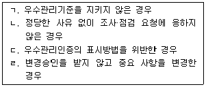
- ㄱ, ㄷ
- ㄴ, ㄹ
- ㄱ, ㄴ, ㄹ
- ㄴ, ㄷ, ㄹ
(정답률: 47%)
7. 농수산물 품질관리법령상 농산물 명예감시원에 관한 설명으로 옳지 않은 것은?
- 농촌진흥청장, 농수산식품유통공사는 명예감시원을 위촉한다.
- 명예감시원의 주요 임무는 농산물의 표준규격화, 농산물우수관리 등에 관한 지도·홍보이다.
- 시·도지사는 명예감시원에게 예산의 범위에서 감시활동에 필요한 경비를 지급할 수 있다.
- 시·도지사는 소비자단체의 회원 등을 명예감시원으로 위촉하여 농산물의 유통질서에 대한 감시·지도를 하게 할 수 있다.
(정답률: 57%)
8. 농수산물 품질관리법령상 우수관리인증농산물의 표시방법에 관한 설명으로 옳지 않은 것은?
- 포장재의 크기에 따라 표지의 크기를 키우거나 줄일 수 있다.
- 포장재 주 표시면의 옆면에 표시하며 위치를 변경할 수 없다.
- 표지 및 표시사항은 소비자가 쉽게 알아볼 수 있도록 인쇄하거나 스티커로 포장재에서 떨어지지 않도록 부착하여야 한다.
- 수출용의 경우에는 해당 국가의 요구에 따라 표시할 수 있다.
(정답률: 66%)
9. 농수산물 품질관리법령상 과태료 부과기준이다. ( )에 들어갈 내용으로 옳은 것은?
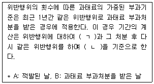
- ㄱ: A, ㄴ: A
- ㄱ: A, ㄴ: B
- ㄱ: B, ㄴ: A
- ㄱ: B, ㄴ: B
(정답률: 47%)
10. 농수산물 품질관리법령상 표준규격품임을 표시하기 위하여 해당 물품의 포장 겉면에 “표준규격품”이라는 문구와 함께 의무적으로 표시하여야 하는 사항을 모두 고른 것은?
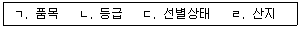
- ㄱ, ㄴ
- ㄷ, ㄹ
- ㄱ, ㄴ, ㄷ
- ㄱ, ㄴ, ㄹ
(정답률: 64%)
11. 농수산물 품질관리법령상 이력추적관리의 등록사항이 아닌 것은?
- 생산자 재배지의 주소
- 유통자의 성명, 주소 및 전화번호
- 유통자의 유통업체명, 수확 후 관리시설명
- 판매자의 포장·가공시설 주소 및 브랜드명
(정답률: 57%)
12. 농수산물 품질관리법령상 3년 이하의 징역 또는 3천만원 이하의 벌금에 해당하지 않는 경우는?
- 우수표시품이 아닌 농산물에 우수표시품의 표시를 한 자
- 유전자변형농산물의 표시를 거짓으로 한 유전자변형농산물 표시의무자
- 지리적표시품이 아닌 농산물의 포장·용기·선전물 및 관련 서류에 지리적표시를 한 자
- 표준규격품의 표시를 한 농산물에 표준규격품이 아닌 농산물을 혼합하여 판매하는 행위를 한 자
(정답률: 56%)
13. 농수산물 품질관리법령상 지리적표시 등록 신청서에 첨부·표시해야 하는 것으로 옳지 않은 것은?
- 해당 특산품의 유명성과 시·도지사의 추천서
- 자체품질기준
- 품질관리계획서
- 생산계획서(법인의 경우 각 구성원별 생산계획을 포함한다.)
(정답률: 52%)
14. 농수산물 품질관리법령상 농산물 지정검사기관이 1회 위반행위를 하였을 때 가장 가벼운 행정처분을 받는 것은?
- 업무정지 기간 중에 검사 업무를 한 경우
- 정당한 사유 없이 지정된 검사를 하지 않은 경우
- 검사를 거짓으로 한 경우
- 시설·장비·인력, 조직이나 검사업무에 관한 규정 중 어느 하나가 지정기준에 맞지 않는 경우
(정답률: 41%)
15. 농수산물 품질관리법상 유전자변형농산물의 표시 위반에 대한 처분에 해당하지 않는 것은?
- 표시의 변경 시정명령
- 표시의 삭제 시정명령
- 표시 위반 농산물의 판매 금지
- 표시 위반 농산물의 몰수
(정답률: 52%)
16. 농수산물 품질관리법상 농산물의 안전성조사에 관한 설명으로 옳은 것은?
- 농림축산식품부장관은 농산물의 안전관리계획을 5년마다 수립·시행하여야 한다.
- 식품의약품안전처장은 농산물의 안전성을 확보하기 위한 세부추진계획을 5년마다 수립·시행하여야 한다.
- 식품의약품안전처장은 시료 수거를 무상으로 하게 할 수 있다.
- 안전성조사의 대상품목 선정, 대상지역 및 절차 등에 필요한 세부적인 사항은 농촌진흥청장에 정한다.
(정답률: 50%)
17. 농수산물 유통 및 가격안정에 관한 법률상 매매방법에 대한 규정이다. ( )에 들어갈 내용으로 옳은 것은?
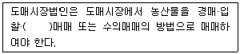
- 선취
- 선도
- 창고
- 정가
(정답률: 52%)
18. 농수산물 유통 및 가격안정에 관한 법령상 도매시장 개설자가 거래관계자의 편익과 소비자 보호를 위하여 이행하여야 하는 사항으로 옳지 않은 것은?
- 도매시장 시설의 정비·개선
- 농산물 상품성 향상을 위한 규격화
- 농산물 품위 검사
- 농산물 포장 개선 및 선도 유지의 촉진
(정답률: 57%)
19. 농수산물 유통 및 가격안정에 관한 법령상 경매사의 임면과 업무에 관한 설명으로 옳지 않은 것은?
- 도매시장법인이 확보하여야 하는 경매사의 수는 2명 이상으로 한다.
- 도매시장법인은 경매사를 임면한 경우 임면한 날부터 10일 이내에 도매시장 개설자에게 신고하여야 한다.
- 도매시장법인은 해당 도매시장의 시장도매인, 중도매인을 경매사로 임명할 수 없다.
- 경매사는 상장 농산물에 대한 가격평가 업무를 수행한다.
(정답률: 36%)
20. 농수산물 유통 및 가격안정에 관한 법령상 농산물 과잉생산 시 농림축산식품부장관이 생산자 보호를 위해 하는 업무에 관한 설명으로 옳지 않은 것은?
- 수매 및 처분에 관한 업무를 한국식품연구원에 위탁할 수 있다.
- 수매한 농산물에 대해서는 해당 농산물의 생산지에서 폐기하는 등 필요한 처분을 할 수 있다.
- 채소류 등 저장성이 없는 농산물의 가격안정을 위하여 필요하다고 인정할 때에는 그 생산자 또는 생산자단체로부터 해당 농산물을 수매할 수 있다.
- 수매한 농산물은 판매 또는 수출하거나 사회복지단체에 기증할 수 있다.
(정답률: 44%)
21. 농수산물 유통 및 가격안정에 관한 법령상 도매시장 개설자가 도매시장법인으로 하여금 우선적으로 판매하게 할 수 있는 대상을 모두 고른 것은?
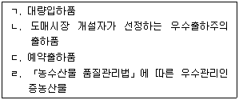
- ㄱ, ㄴ
- ㄱ, ㄷ
- ㄴ, ㄷ, ㄹ
- ㄱ, ㄴ, ㄷ, ㄹ
(정답률: 66%)
22. 농수산물 유통 및 가격안정에 관한 법률상 공판장에 관한 설명으로 옳지 않은 것은?
- 농협은 공판장을 개설할 수 있다.
- 공판장의 시장도매인은 공판장의 개설자가 지정한다.
- 공판장에는 중도매인을 둘 수 있다.
- 공판장에는 경매사를 둘 수 있다.
(정답률: 54%)
23. 농수산물 유통 및 가격안정에 관한 법령상 유통조절명령에 포함되어야 하는 사항이 아닌 것은?
- 유통조절명령의 이유
- 대상 품목
- 시·도지사가 유통조절에 관하여 필요하다고 인정하는 사항
- 생산조정 또는 출하조절의 방안
(정답률: 53%)
24. 농수산물 유통 및 가격안정에 관한 법률상 민영도매시장의 개설 및 운영 등에 관한 내용으로 옳지 않은 것은?
- 민영도매시장을 개설하려면 시·도지사의 허가를 받아야 한다.
- 농산물을 수집하여 민영도매시장에 출하하려는 자는 민영도매시장의 개설자에게 산지 유통인으로 등록하여야 한다.
- 민간인등이 민영도매시장의 개설허가를 받으려면 시·도지사가 정하는 바에 따라 민영도매시장 개설허가 신청서를 시·도지사에게 제출하여야 한다.
- 민영도매시장의 경매사는 민영도매시장의 개설자가 임면한다.
(정답률: 34%)
25. 농수산물 유통 및 가격안정에 관한 법령상 중도매인이 도매시장 개설자의 허가를 받아 도매시장법인이 상장하지 아니한 농산물을 거래할 수 있는 품목에 관한 내용으로 옳지 않은 것은?
- 온라인거래소를 통하여 공매하는 비축품목
- 부류를 기준으로 연간 반입물량 누적비율이 하위 3퍼센트 미만에 해당하는 소량 품목
- 품목의 특성으로 인하여 해당 품목을 취급하는 중도매인이 소수인 품목
- 그 밖에 상장거래에 의하여 중도매인이 해당 농산물을 매입하는 것이 현저히 곤란하다고 개설자가 인정하는 품목
(정답률: 38%)
2과목: 원예작물학
26. 원예작물의 주요 기능성 물질의 연결이 옳은 것은?
- 상추-엘라그산(ellagic acid)
- 마늘-알리인(alliin)
- 토마토-시니그린(sinigrin)
- 포도-아미그달린(amygdalin)
(정답률: 55%)
27. 밭에서 재배하는 원예작물이 과습조건에 놓였을 때 뿌리조직에서 일어나는 현상으로 옳지 않은 것은?
- 무기호흡이 증가한다.
- 에탄올 축적으로 생육장해를 받는다.
- 세포벽의 목질화가 촉진된다.
- 철과 망간의 흡수가 억제된다.
(정답률: 42%)
28. 원예작물에 피해를 주는 흡즙성 곤충이 아닌 것은?
- 진딧물
- 온실가루이
- 점박이응애
- 콩풍뎅이
(정답률: 57%)
29. 결핍 시 잎에서 황화 현상을 일으키는 원소가 아닌 것은?
- 질소
- 인
- 철
- 마그네슘
(정답률: 42%)
30. 마늘의 무병주 생산에 적합한 조직배양법은?
- 줄기배양
- 화분배양
- 엽병배양
- 생장점배양
(정답률: 60%)
31. 원예작물의 증산속도를 높이는 환경조건은?
- 미세 풍속의 증가
- 낮은 광량
- 높은 상대습도
- 낮은 지상부 온도
(정답률: 54%)
32. 딸기의 고설재배에 관한 설명으로 옳지 않은 것은?
- 토경재배에 비해 관리작업의 편리성이 높다.
- 토경재배에 비해 설치비가 저렴하다.
- 점적 도는 NFT 방식의 관수법을 적용한다.
- 재배 베드를 허리높이까지 높여 재배하는 방식을 사용한다.
(정답률: 66%)
33. 배추과에 속하지 않는 원예작물은?
- 케일
- 배추
- 무
- 비트
(정답률: 50%)
34. 일년초 화훼류는?
- 칼랑코에, 매발톱꽃
- 제라늄, 맨드라미
- 맨드라미, 봉선화
- 포인세티아, 칼랑코에
(정답률: 49%)
35. A농산물품질관리사의 출하 시기 조절에 관한 조언으로 옳은 것을 모두 고른 것은?
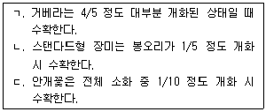
- ㄱ
- ㄱ, ㄴ
- ㄴ, ㄷ
- ㄱ, ㄴ, ㄷ
(정답률: 31%)
36. 화훼류를 시설 내에서 장기간 재배한 토양에 관한 설명으로 옳지 않은 것은?
- 공극량이 적어진다.
- 특정성분의 양분이 결핍된다.
- 염류집적 발생이 어렵다.
- 병원성 미생물의 밀도가 높아진다.
(정답률: 60%)
37. 줄기신장을 억제하여 콤팩트한 고품질 분화 생산을 위한 생장조절제는?
- B-9
- NAA
- IAA
- GA
(정답률: 47%)
38. 절화류 보존제는?
- 에틸렌
- AVG
- ACC
- 에테폰
(정답률: 39%)
39. 원예작물의 저온 춘화에 관한 설명으로 옳지 않은 것은?
- 저온에 의해 개화가 촉진되는 현상을 말한다.
- 녹색 식물체 춘화형은 일정기간 동안 생육한 후부터 저온에 감응한다.
- 춘화에 필요한 온도는 –15~-10℃ 사이이다.
- 생육중인 식물의 저온에 감응하는 부위는 생장점이다.
(정답률: 56%)
40. 양액재배에서 고형배지 없이 양액을 일정 수위에 맞춰 흘려보내는 재배법은?
- 매트재배
- 박막수경
- 분무경
- 저면관수
(정답률: 54%)
41. 다음 농산물품질관리사(A~C)의 조언으로 옳은 것만을 모두 고른 것은?
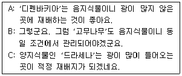
- B
- A, B
- A, C
- A, B, C
(정답률: 33%)
42. 과수의 꽃눈분화 촉진을 위한 재배방법으로 옳지 않은 것은?
- 질소시비량을 늘린다.
- 환상박피를 실시한다.
- 가지를 수평으로 유인한다.
- 열매솎기로 착과량을 줄인다.
(정답률: 40%)
43. 수확기 후지 사과의 착색 증진에 효과적인 방법만을 모두 고른 것은?
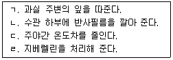
- ㄱ, ㄴ
- ㄱ, ㄹ
- ㄴ, ㄷ
- ㄷ, ㄹ
(정답률: 50%)
44. ( )에 들어갈 내용으로 옳은 것은?
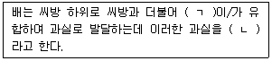
- ㄱ: 꽃받침, ㄴ: 진과
- ㄱ: 꽃받기, ㄴ: 진과
- ㄱ: 꽃받기, ㄴ: 위과
- ㄱ: 꽃받침, ㄴ: 위과
(정답률: 43%)
45. ( )에 들어갈 내용으로 옳은 것은?
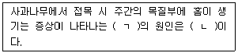
- ㄱ: 고무병, ㄴ: 바이러스
- ㄱ: 고무병, ㄴ: 박테리아
- ㄱ: 고접병, ㄴ: 바이러스
- ㄱ: 고접병, ㄴ: 박테리아
(정답률: 59%)
46. 과수에서 삽목 시 삽수에 처리하면 발근 촉진 효과가 있는 생장조절물질은?
- IBA
- GA
- ABA
- AOA
(정답률: 40%)
47. 월동하는 동안 저온요구도가 700시간인 지역에서 배와 참다래를 재배할 경우 봄에 꽃눈의 맹아 상태는? (단, 저온요구도는 저온요구를 충족시키는 데 필요한 7℃이하의 시간을 기준으로 함)
- 배-양호, 참다래-양호
- 배-양호, 참다래-불량
- 배-불량, 참다래-양호
- 배-불량, 참다래-불량
(정답률: 35%)
48. 사과 고두병과 코르크스폿(cork spot)의 원인은?
- 칼륨 과다
- 망간 과다
- 칼슘 부족
- 마그네슘 부족
(정답률: 50%)
49. 유충이 과실을 파고들어가 피해를 주는 해충은?
- 복숭아명나방
- 깍지벌레
- 귤응애
- 뿌리혹선층
(정답률: 63%)
50. 식물학적 분류에서 같은 과(科)의 원예작물로 짝지어지지 않은 것은?
- 상추-국화
- 고추-감자
- 자두-딸기
- 마늘-생강
(정답률: 37%)
3과목: 수확 후 품질관리론
51. 수확후품질관리에 관한 내용이다. ( )에 들어갈 내용으로 옳은 것은?
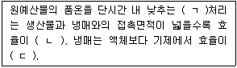
- ㄱ: 예냉, ㄴ: 낮고, ㄷ: 높다
- ㄱ: 예냉, ㄴ: 높고, ㄷ: 낮다
- ㄱ: 예건, ㄴ: 낮고, ㄷ: 높다
- ㄱ: 예건, ㄴ: 높고, ㄷ: 낮다
(정답률: 49%)
52. 복숭아 수확 시 고려사항이 아닌 것은?
- 경도
- 만개 후 일수
- 적산온도
- 전분지수
(정답률: 39%)
53. A농가에서 다음 품목을 수확한 후 동일 조건의 저장고에 저장중 품목별 5% 수분손실이 발생하였다. 이 때 시들음이 상품성 저하에 가장 큰 영향을 미치는 품목은?
- 감
- 양파
- 당근
- 시금치
(정답률: 50%)
54. 토마토의 성숙중 색소변화로 옳은 것은?
- 클로로필 합성
- 리코핀 합성
- 안토시아닌 분해
- 카로티노이드 분해
(정답률: 42%)
55. 수확 전 칼슘결핍으로 발생 가능한 저장 생리장해는?
- 양배추의 흑심병
- 토마토의 꼭지썩음병
- 배의 화상병
- 복숭아의 균핵병
(정답률: 26%)
56. 필름으로 원예산물을 외부공기와 차단하여 인위적 공기조성 효과를 내는 저장기술은?
- 저온저장
- CA저장
- MA저장
- 저산소저장
(정답률: 42%)
57. 호흡양상이 다른 원예산물은?
- 토마토
- 바나나
- 살구
- 포도
(정답률: 50%)
58. 원예산물별 수확시기를 결정하는 지표로 옳지 않은 것은?
- 배추 – 만개 후 일수
- 신고배 – 만개 후 일수
- 멜론 – 네트 발달 정도
- 온주밀감 – 과피의 착색 정도
(정답률: 41%)
59. 산지유통센터에서 사용되는 과실류 선별기가 아닌 것은?
- 중량식 선별기
- 형상식 선별기
- 비파괴 선별기
- 풍력식 선별기
(정답률: 44%)
60. 신선편이 농산물 세척용 소독물질이 아닌 것은?
- 중탄산나트륨
- 과산화수소
- 메틸브로마이드
- 차아염소산나트륨
(정답률: 47%)
61. 원예산물의 조직감을 측정할 수 있는 품질인자는?
- 색도
- 산도
- 수분함량
- 당도
(정답률: 45%)
62. 원예산물의 풍미 결정요인을 모두 고른 것은?
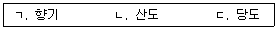
- ㄱ
- ㄱ, ㄴ
- ㄴ, ㄷ
- ㄱ, ㄴ, ㄷ
(정답률: 63%)
63. 굴절당도계에 관한 설명으로 옳지 않은 것은?
- 증류수로 영점을 보정한다.
- 과즙의 온도는 측정값에 영향을 준다.
- 당도는 °Brix로 표시한다.
- 과즙에 함유된 포도당 성분만을 측정한다.
(정답률: 42%)
64. CA저장에 필요한 장치를 모두 고른 것은?
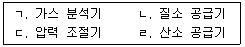
- ㄱ, ㄴ
- ㄷ, ㄹ
- ㄱ, ㄴ, ㄷ
- ㄴ, ㄷ, ㄹ
(정답률: 45%)
65. 5℃에서 측정 시 호흡속도가 가장 높은 원예산물은?
- 아스파라거스
- 상추
- 콜리플라워
- 브로콜리
(정답률: 37%)
66. 원예산물 저장중 저온장해에 관한 내용이다. ( )에 들어갈 내용으로 옳은 것은?
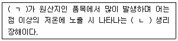
- ㄱ: 온대, ㄴ: 영구적인
- ㄱ: 아열대, ㄴ: 영구적인
- ㄱ: 온대, ㄴ: 일시적인
- ㄱ: 아열대, ㄴ: 일시적인
(정답률: 36%)
67. 딸기의 수확 후 손실을 줄이기 위한 방법이 아닌 것은?
- 착색촉진을 위해 에틸렌을 처리한다.
- 수확 직후 품온을 낮춘다.
- 이산화염소로 전처리한다.
- 수확 직후 선별·포장을 한다.
(정답률: 54%)
68. 원예산물 저장 시 에틸렌 합성에 필요한 물질은?
- CO2
- O2
- AVG
- STS
(정답률: 30%)
69. 저온저장중 다음 현상을 일으키는 원인은?
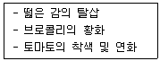
- 높은 상대습도
- 고농도 에틸렌
- 저농도 산소
- 저농도 이산화탄소
(정답률: 47%)
70. 수확 후 예건이 필요한 품옥을 모두 고른 것은?
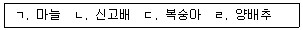
- ㄱ, ㄴ
- ㄷ, ㄹ
- ㄱ, ㄴ, ㄹ
- ㄱ, ㄷ, ㄹ
(정답률: 43%)
71. 원예산물의 저온저장고 관리에 관한 내용이다. ( )에 들어갈 내용은?
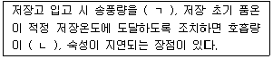
- ㄱ: 높여, ㄴ: 늘고
- ㄱ: 높여, ㄴ: 줄고
- ㄱ: 낮춰, ㄴ: 늘고
- ㄱ: 낮춰, ㄴ: 줄고
(정답률: 58%)
72. 다음이 예방할 수 있는 원예산물의 손상이 아닌 것은?
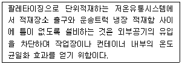
- 생물학적 손상
- 기계적 손상
- 화학적 손상
- 생리적 손상
(정답률: 27%)
73. 저온저장중인 원예산물의 상온 선별 시 A농산물품질관리사의 결로 방지책으로 옳은 것은?
- 선별장내 공기유동을 최소화한다.
- 선별장과 저장고의 온도차를 높여 관리한다.
- 수분흡수율이 높은 포장상자를 사용한다.
- MA필름으로 포장하여 외부 공기가 산물에 접촉되지 않게 한다.
(정답률: 42%)
74. 원예산물의 생물학적 위해 요인이 아닌 것은?
- 곰팡이 독소
- 병원성 대장균
- 기생충
- 바이러스
(정답률: 38%)
75. HACCP 실시과정에 관한 내용이다. ( )에 들어갈 내용으로 옳은 것은?
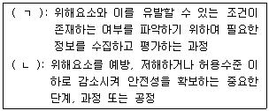
- ㄱ: 위해요소분석, ㄴ: 한계기준
- ㄱ: 위해요소분석, ㄴ: 중요관리점
- ㄱ: 한계기준, ㄴ: 중요관리점
- ㄱ: 중요관리점, ㄴ: 위해요소분석
(정답률: 56%)
4과목: 농산물유통론
76. 농산물 유통이 부가가치를 창출하는 일련의 생산적 활동임을 의미하는 것은?
- 가치사슬(value chain)
- 푸드시스템(food system)
- 공급망(supply chain)
- 마케팅빌(marketing bill)
(정답률: 58%)
77. 농식품 소비구조 변화에 관한 내용으로 옳지 않은 것은?
- 신선편이농산물 소비 증가
- PB상품 소비 감소
- 가정간편식(HMR) 소비 증가
- 쌀 소비 감소
(정답률: 60%)
78. 농산물 공동선별·공동계산제에 관한 설명으로 옳지 않은 것은?
- 여러 농가의 농산물을 혼합하여 등급별로 판매한다.
- 농가가 산지유통조직에 출하권을 위임하는 경우가 많다.
- 출하시기에 따라 농가의 가격변동 위험이 커진다.
- 물량의 규모화로 시장교섭력이 향상된다.
(정답률: 50%)
79. 농산물 유통마진에 관한 설명으로 옳지 않은 것은?
- 유통경로, 시기별, 연도별로 다르다.
- 유동비용 중 직접비는 고정비 성격을 갖는다.
- 유통효율성을 평가하는 핵심지표로 사용된다.
- 최종소비재에 포함된 유통서비스의 크기에 따라 달라진다.
(정답률: 34%)
80. 농산물의 단위가격을 1,000원보다 990원으로 책정하는 심리적 가격전략은?
- 준거가격전략
- 개수가격전략
- 단수가격전략
- 단계가격전략
(정답률: 49%)
81. 대형유통업체의 농산물 산지 직거래에 관한 설명으로 옳지 않은 것은?
- 경쟁업체와 차별화된 상품을 발굴하기 위한 노력의 일환이다.
- 산지 수집을 대행하는 업체(vendor)를 가급적 배제한다.
- 매출규모가 큰 업체일수록 산지 직구입 비중이 높은 경향을 보인다.
- 본사에서 일괄 구매한 후 물류센터를 통해 개별 점포로 배송하는 것이 일반적이다.
(정답률: 59%)
82. 우리나라 농산물 종합유통센터의 대표적인 도매거래방식은?
- 경매
- 예약상대거래
- 매취상장
- 선도거래
(정답률: 32%)
83. 농사물도매시장 경매제에 관한 내용으로 옳지 않은 것은?
- 거래의 투명성 및 공정성 확보
- 중도매인간 경쟁을 통한 최고가격 유도
- 상품 진열을 위한 넓은 공간 필요
- 수급상황의 급변에도 불구하고 낮은 가격변동성
(정답률: 54%)
84. 생산자가 지역의 제철 농산물을 소비자에게 정기적으로 배송하는 직거래 방식은?
- 로컬푸드 직매장
- 직거래 장터
- 꾸러미사업
- 농민시장(farmers market)
(정답률: 57%)
85. 산지의 밭떼기(포전매매)에 관한 설명으로 옳지 않은 것은?
- 선물거래의 한 종류이다.
- 계약가격에 판매가격을 고정시킨다.
- 농가가 계약금을 수취한다.
- 계약불이행 위험이 존재한다.
(정답률: 30%)
86. 농산물 산지유통의 거래유형에 해당하는 것을 모두 고른 것은?
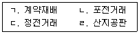
- ㄱ, ㄴ
- ㄱ, ㄷ
- ㄴ, ㄷ, ㄹ
- ㄱ, ㄴ, ㄷ, ㄹ
(정답률: 49%)
87. 농산물 유통의 기능과 창출 효용을 옳게 연결한 것은?
- 거래-장소효용
- 가공-형태효용
- 저장-소유효용
- 수송-시간효용
(정답률: 45%)
88. 농산물 유통의 조성기능에 해당하는 것을 모두 고른 것은?
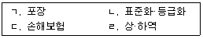
- ㄱ
- ㄴ, ㄷ
- ㄷ, ㄹ
- ㄱ, ㄷ, ㄹ
(정답률: 37%)
89. A영농조합법인이 초등학교 간식용 조각과일을 공급하고자 수행한 SWOT분석에서 ‘T’요인이 아닌 것은?
- 코로나19 재확산
- 사내 생산설비 노후화
- 과일 작황 부진
- 학생 수 감소
(정답률: 57%)
90. 시장세분화에 관한 설명으로 옳지 않은 것은?
- 유사한 욕구와 선호를 가진 소비자 집단으로 세분화가 가능하다.
- 시장규모, 구매력의 크기 등을 측정할 수 있어야 한다.
- 국적, 소득, 종교 등지리적 특성에 따라 세분화가 가능하다.
- 세분시장의 반응에 따라 차별화된 마케팅이 가능하다.
(정답률: 42%)
91. 고가 가격전략을 실행할 수 있는 경우는?
- 높은 제품기술력을 가지고 있을 경우
- 시장점유율을 극대화하고자 할 경우
- 원가우위로 시장을 지배하려고 할 경우
- 경쟁사의 모방 가능성이 높을 경우
(정답률: 61%)
92. 6~5명 정도의 소그룹을 대상으로 2시간 내외의 집중면접을 실시하는 마케팅조사 방법은?
- FGI
- 전수조사
- 관찰조사
- 서베이조사
(정답률: 38%)
93. 광고에 관한 설명으로 옳지 않은 것은?
- 비용을 지불해야 한다.
- 불특성 다수를 대상으로 한다.
- 표적시장별로 광고매체를 선택할 수 있다.
- 상표광고가 기업광고보다 기업이미지 개선에 효과적이다.
(정답률: 57%)
94. 소비자 구매심리과정(AIDMA)을 순서대로 옳게 나열한 것은?
- 욕구→주의→흥미→기억→행동
- 흥미→주의→기억→욕구→행동
- 주의→흥미→욕구→기억→행동
- 기억→흥미→주의→욕구→행동
(정답률: 34%)
95. 농산물 물류비에 포함되지 않는 것은?
- 포장비
- 수송비
- 재선별비
- 점포임대료
(정답률: 54%)
96. 국내산 감귤 가격 상승에 따라 수입산 오렌지 수요가 늘어났을 경우 감귤과 오렌지 간의 관계는?
- 대체재
- 보완재
- 정상재
- 기펜재
(정답률: 57%)
97. 생산자단체가 자율적으로 농산물 소비촉진, 수급조절 등을 시행하는 사업은?
- 유통조절명령
- 유통협약
- 농업관측사업
- 자조금사업
(정답률: 21%)
98. 농산물 유통정보의 직접적인 기능이 아닌 것은?
- 시장참여자간 공정경쟁 촉진
- 정보 독과점 완화
- 출하시기, 판매량 등의 의사결정에 기여
- 생산기술 개선 및 생산량 증대
(정답률: 47%)
99. 농산물 포장의 본원적 기능이 아닌 것은?
- 제품의 보호
- 취급의 편의
- 판매의 촉진
- 재질의 차별
(정답률: 54%)
100. 소비자의 농산물 구매의사 결정과정 중 구매 후 행동을 모두 고른 것은?
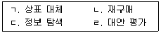
- ㄱ, ㄴ
- ㄴ, ㄷ
- ㄱ, ㄷ, ㄹ
- ㄱ, ㄴ, ㄷ, ㄹ
(정답률: 36%)